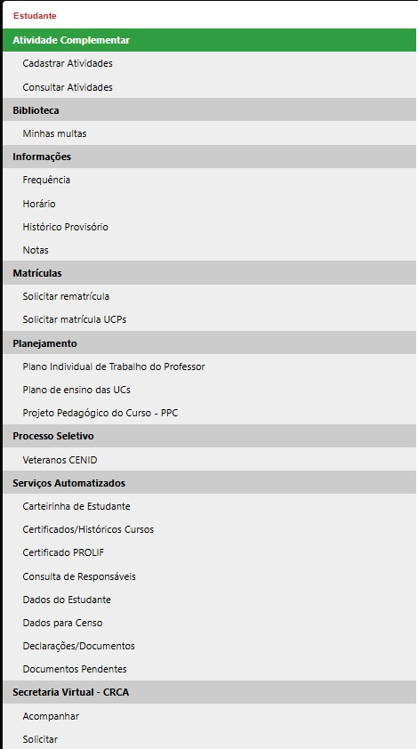
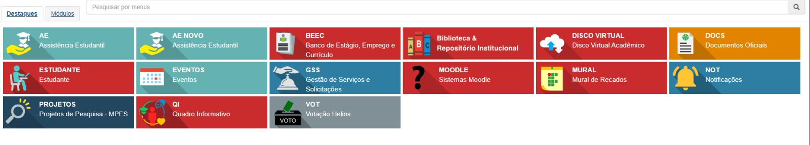
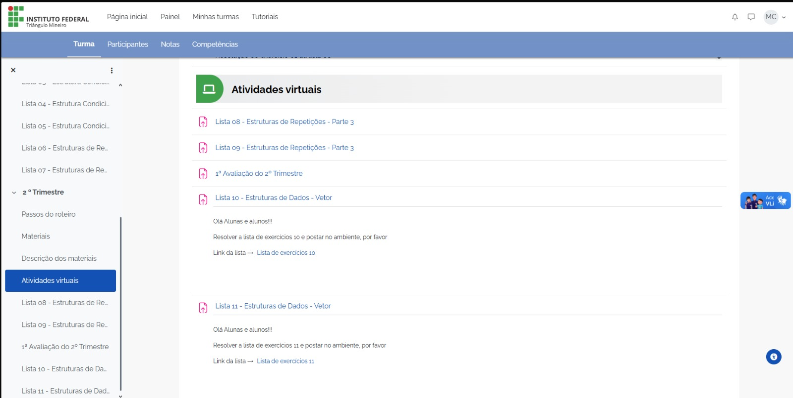

Assim que você chegar, o professor que coordena o seu curso estará procurando por você e seus
colegas. Ele irá falar: "Pessoal do TCG, para o auditório!"
e talvez você se pergunte: "o que isso significa?". Bem, isso aconteceu comigo, então aqui
está
as abreviações que você irá ouvir e seus significados:
TCG: Técnico de Computação Gráfica.
TELE: Técnico de Eletrônica.
TDS: Técnico de Desenvolvimento de Sistemas.
UPT: Uberaba Parque Tecnológico (Nós! E sim, somos separados do "Fazenda", o campus
Uberaba).
Moodle/AVA: É o ambiente virtual usado para postar atividades virtuais (Moodle era o nome do
sistema antigo!)
Agora que você sabe quem você é, siga a pessoa falando com você e sente-se que lá vem
palestra.
Você irá ser apresentado várias pessoas importantes para
sua vida aqui, (que recomendo que você anote) como: Coordenador de Curso, Diretor, Coordenador(a) de
Assistência
Estudantil, de
Pesquisa, de Extensão, de NAPNE, entre outras. Calma, não entendeu
metade dos cargos que falei? Não se preocupe, vou explicar.
Aqui no IF, por ser uma escola federal, temos os chamados projetos, que são incentivos do
governo para que façamos alguma coisa com direito à concorrer a uma bolsa (Varia entre R$100
e
R$400).
Temos três tipos de projetos: de Extensão, de Ensino, e de Pesquisa, que falam
qual é a
intenção
do projeto:
Extensão - Fazer algo fora da escola (Em outras escolas, em praças, etc)?
Ensino - Fazer algo educativo dentro da escola (Aulas como de violino, atividades extras etc)?
Pesquisa - Pesquisar sobre algum assunto em específico (Como resolver um problema na escola ou na
nossa cidade)?
Claro, estou falando resumidamente, mas caso
você
tenha interesse saiba que precisará de um orientador e do nome dos coordenadores - um
orientador para lhe ajudar no seu projeto e do coordenador para quaisquer dúvidas que
sejam. Para mais informações, procure os editais no site oficial do IF, ou clique nos
editais
disponíveis aqui:
Extensão
(de Outubro de 2025),
Ensino
(de Outubro de 2025),
Pesquisa
(de Outubro de 2025).
Obs.: Os editais para submeter seu projeto
possuem
tempo limitado
e estão abertos por volta do começo, meio e fim do ano. Para se manter atualizado leia os
editais mais recentes ou fale com o coordenador.
Temos os chamados editais de monitoria, que possuem o benefício
de
ganhar bolsa (e possuem uma bolsa separada para eles) mas para ser monitor(a) é
necessário ser do segundo ou terceiro ano, os do terceiro tendo prioridade (além de ter boas
notas
com o professor da disciplina que você planeja se tornar monitor, claro).
Temos a chamada assistência estudantil, onde estudantes de baixa renda podem
concorrer e
ganhar um auxílio todo mês. Os editais acontecem sempre no começo do ano até o meio de
fevereiro, então fique ligado (e lembre-se de filtrar para apenas o nosso campus) Editais Assistência Estudantil
(role
até achar e
clique na opção que combine com você).
Editais de Intercâmbio, que começam normalmente no começo do ano (Março-Maio) e são colocadas em
práticas no meio do ano e estão disponíveis nesse site:
Intercâmbio.
Dicas: Apenas
podem tentar ser escolhidos para o intercâmbio aqueles no segundo ano. Por isso, caso tenha
interesse, procure o edital mais novo e veja os critérios de pontuação (que incluem testes
de
linguagem, econômico, entre outros) para que você tenha maiores chances! Além disso o
Instagram
do IF costuma postar nos stories quando os editais são postados: Instagram IF UPT.
Para saber suas matérias atuais e futuras, vá: no seu curso e em "horários". Aqui vai um exemplo do TDS:
Apenas um aviso: tenha o seu CPF decorado (ou escrito), porque será usado em todas as coisas do IF.
Temos três sites principais do IF: O Virtual IF, o AVA (Ambiente Virtual) e o site próprio
oficial do IF (onde temos os editais e etc). É necessário que
você faça login em cada um deles, ativando seu e-mail estudantil no virtual IF, para
conseguir
fazer as coisas por aqui.
O Virtual IF é onde você vê sobre você: o uso mais comum é para ver notas, mas também é onde
você se inscreverá para obter e ver suas bolsas ou qualquer auxílio que for,
ver os livros da biblioteca que você precisa retornar (ou reservar), onde alguns professores
colocam a matéria e entre outros.


No AVA temos a postagem de atividades virtuais pelos professores, como provas, trabalhos e
tarefas que devem ser postadas em um limite de tempo senão serão marcadas como atrasadas ou
trancadas (no caso de trabalhos e provas)
